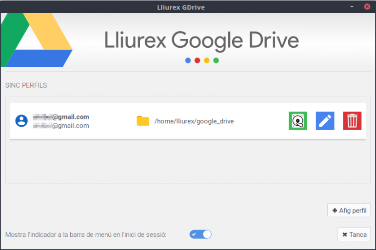
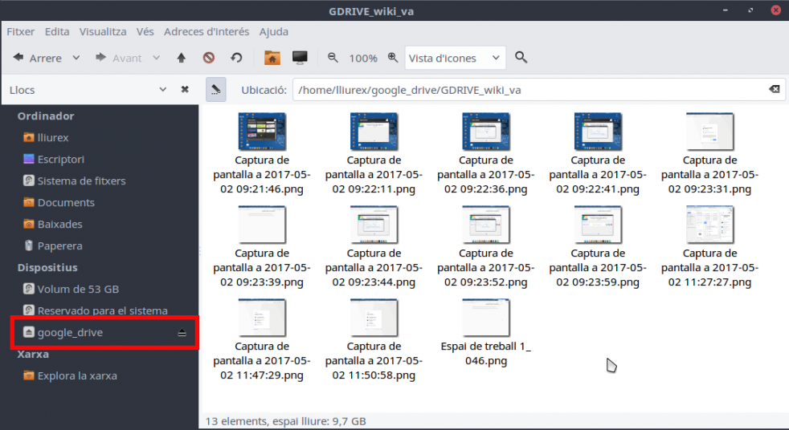

Configura't tots els comptes

-
Pots sincronitzar tots els teus comptes.
El de la feina, el personal, etc. -
Tindràs accés a tot
Edita els documents, fotos, etc.
Controla els teus perfils
-
Mira l'estat
Mira si tens muntada la unitat i accés als fitxers. -
Edita els perfils
Modifica el punt de muntatge, la contrasenya, etc. -
Esborra el perfil
Si ja no el vols utilitzar, esborra'l.
Els teus fitxers continuen al núvol
-
La unitat està muntada
No es descarrega res, és com accedir a través del navegador. -
Cal tindre Internet
Si no tens connexió no podràs accedir als fitxers. -
Tens un accés directe en la barra de menú
Des d'ací podràs controlar l'estat del servei.